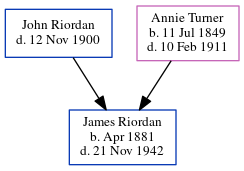

James A Riordan 1881 - 1942
[ Home ] | [ Calendar ] | [ Surnames Index ] | [ Census Index ] | [ Family History ]The child of John Riordan (a prominent cotton buyer/brpler) and Annie Turner, James Riordan, the great-great-uncle of Michele Copp (née Phillips), was born in Georgia in Apr 18811.
During his life, he was living in Atlanta Ward 4, Fulton, Georgia in 19001; and in Los Angeles, CA USA in 1911.
He died on Nov 21, 1942 in Sacramento, Sacramento, California, USA.
Parents
- John was born c. 29 Jun 1840
- Annie R was born on Jul 11, 1849
Citations
- 1900 United States Federal Census Online publication - Provo, UT, USA: MyFamily.com, Inc., 2004.Original data - United States of America, Bureau of the Census. Twelfth Census of the United States, 1900. Washington, D.C.: National Archives and Records Administration, 1900. T623, 1854 rolls.
Family Tree
Generated by ged2site. Last updated on Jun 11, 2024